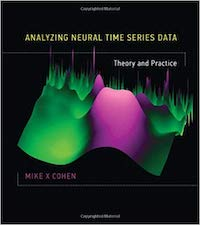
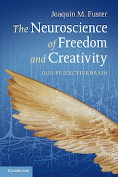
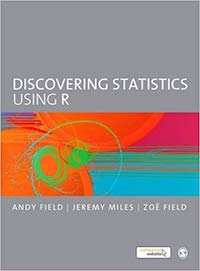

My Reads
Matthew J. Kmiecik
First posted: 3 January 2019; Final update: 26 December 2019
I absolutely love reading and collecting books. Whenever I’m in a phase where I am constantly reading, I feel more creative and confident in my academic work. However, it’s easy to put reading off when life gets in the way.
To motivate me to read more, I tracked the number of pages I read per day through the year 2019 (I was trying for around 20 pages per day). I found the process of tracking my reading progress a daily reading motivator and I highly recommend it for those looking to up your daily/weekly/monthly reading productivity.
Reading Progress
# Packages
library(tidyverse); library(readxl); library(plotly);
library(httr); library(RColorBrewer)
# Color pallete
rdgy_pal <- brewer.pal(11, "RdGy")
# Importing reading data
# From: https://community.rstudio.com/t/read-xlsx-from-github/9386/3
# See the above link for how I got the code to read in
# an Excel file into R from Github
github_link <- "https://github.com/mkmiecik14/mkmiecik14.github.io/blob/master/data/my-reads.xlsx?raw=true"
temp_file <- tempfile(fileext = ".xlsx")
req <- GET(github_link, write_disk(path = temp_file))
# Reading data (updated to github on my end)
reading_data <-
readxl::read_excel(temp_file, sheet = "reading-data") %>%
mutate(date = as.Date(date))
# Book list (updated to github on my end)
book_list <- read_excel(temp_file, sheet = "book-list")
# Joinging book list to reading data
rdata <- left_join(reading_data, book_list, by = "book")
# Plotting daily reading progress by pages ----
pages_plot <-
ggplot(rdata, aes(date, pages, color = title, group = title)) +
geom_point(aes(group = author)) +
geom_line(alpha = 2/3) +
scale_x_date(
date_labels = "%b",
limits = c(min(rdata$date), as.Date(Sys.Date() + 5)),
date_breaks = "1 month",
date_minor_breaks = "1 day"
) +
#coord_cartesian(ylim = c(0, 50)) +
labs(x = paste0("\n date (last updated: ", format(Sys.Date(), "%d-%b-%Y"), ")")) +
scale_color_brewer(palette = "Paired") +
theme_minimal() +
theme(legend.position = "none")
# Converts to plotly and plots it
ggplotly(pages_plot)# Cleans NAs
rdata_completed <- rdata %>% filter(complete.cases(pages))
# Pages histogram
bwidth <- 2
ggplot(rdata_completed, aes(pages)) +
geom_histogram(binwidth = bwidth) +
labs(y = "frequency", caption = paste("Binwidth =", bwidth)) +
theme_minimal()
# Weekly trend ----
weekly_rdata <-
rdata_completed %>%
group_by(year, week) %>%
summarise(
psum = sum(pages),
days = n(),
m = mean(pages),
sd = sd(pages)
) %>%
ungroup()## `summarise()` regrouping output by 'year' (override with `.groups` argument)# 2019 only
pj <- position_jitter(width = .1, height = .05)
ggplot(weekly_rdata %>% filter(year == 2019), aes(week, m)) +
geom_point(
data = rdata_completed %>% filter(year == 2019),
aes(y = pages),
shape = 1,
#alpha = 2/3,
position = pj,
color = "#f4a582"
) +
#geom_path(aes(group = 1), color = "black", linetype = 1) +
geom_point(size = 2) +
geom_errorbar(aes(ymin = m-sd, ymax = m+sd), width = .05) +
geom_smooth(method = "loess", se = FALSE, color = rdgy_pal[3]) +
labs(
x = "\n Week number in 2019",
y = "Average Number of pages read/week \n",
caption = "SD error bars"
) +
theme_minimal()## `geom_smooth()` using formula 'y ~ x'
# Days of the week trend ----
# "Raw" data
weekday_rdata <-
rdata_completed %>%
mutate(weekday = weekdays(as.Date(date))) %>%
mutate(
weekday = fct_relevel(
weekday,
c("Monday", "Tuesday", "Wednesday", "Thursday", "Friday", "Saturday", "Sunday")
)
)
# Summary data
weekday_rdata_sum <-
weekday_rdata %>%
group_by(year, weekday) %>%
summarise(
psum = sum(pages),
n = n(),
m = mean(pages),
sd = sd(pages)
) %>%
ungroup() ## `summarise()` regrouping output by 'year' (override with `.groups` argument)# 2019 only
pj <- position_jitter(width = .1, height = .05)
ggplot(weekday_rdata_sum %>% filter(year == 2019), aes(weekday, m)) +
geom_point(
data = weekday_rdata %>% filter(year == 2019),
aes(y = pages),
shape = 1,
#alpha = 2/3,
position = pj,
color = "#92c5de"
) +
geom_path(aes(group = 1), color = "black", linetype = 2) +
geom_point(size = 2) +
geom_errorbar(aes(ymin = m-sd, ymax = m+sd), width = .05) +
#coord_cartesian(ylim = c(0, 50)) +
labs(
x = "\n Weekday in 2019",
y = "Average Number of pages read/day \n",
caption = "SD error bars"
) +
theme_minimal()
My Favorite Reads
Here’s a list of books that have heavily influenced my work one way or another. I’m sure there are plenty more that I haven’t thought of, but I’ll add them along the way.
What are your favorite books and why? I’d love to know if you have any recommendations of books I should read and add to my list! Just leave a comment below.

- Analyzing Neural Time Series Data: Theory and Practice Mike X Cohen
A definite must read for anyone interested in performing time frequency analyses with their EEG data or designing experiments for later time frequency decompositions. Dr. Cohen artfully explains a myriad of time-frequency methods by blending conceptual understanding and practical application with code examples/tips, equations, and wonderful figures. I really appreciated his bottom-up approach in EEG analyses, often doing things by “scratch”, i.e., writing Matlab code to perform computations on matrices of data, rather than using software packages and toolboxes (e.g., EEGLAB or ERPLAB). I must admit that I didn’t grasp every concept on my first read through, but I will definitely revisit come analysis time!

- An Introduction to the Event-Related Potential Technique (Second Edition) Steven J. Luck
This is an excellent introduction into the event-related pontential (ERP) technique for anyone who is interested in using ERPs in their research. I highly recommend reading this, especially if you are new to the technique, or even if you have already done ERP work in the past. I’ve learned a great deal from Dr. Luck’s recommendations and philosophy on using ERPs to study cognition, especially about details on high/lowpass filters, time-frequency analysis, and artifact correction/rejection. His tips on collecting EEG signals have made my own EEG recordings cleaner and I look forward to implementing his techniques in my future work.

- The Neuroscience of Freedom and Creativity: Our Predictive Brain Joaquin Fuster
In his latest book, Dr. Fuster argues that humans have free will and our freedom to choose is enabled by our cerebral cortex, the prefrontal cortex in particular. A concept that particularly stood out to me, among many, was his argument that consciousness is an epiphenomenon of cerebral cortex processing. “Consciousness is an obligatory byproduct of intense network activation, not its cause” (p. 31). A profound read that touches on the interaction between the brain and environment, which inludes the emotional perception-action cycle from the limbic system, and its implications in the real world, such as culture, government, and financial systems.

- Cortex and Mind: Unifying Cognition | Memory in the Cerebral Cortex: An Empirical Approach to Neural Networks in the Human and Nonhuman Primate Joaquin Fuster
The ideas, theories, and explanations that Dr. Fuster explicates in his books serve as an excellent framework for understanding the interaction between the cerebral cortex and our environment. Memory in the Cerebral Cortex provides a nice introduction to Dr. Fuster’s theory of cortical memory and the perception action cycle, while drawing from primate and human studies. Cortex and Mind expands these ideas and breaks the discussion into chapters on cognitive functions like memory, language, perception, working memory (attention), and intelligence.

- Data Analysis: A Model Comparison Approach to Regression, ANOVA, and Beyond (Third Ed.) Charles M. Judd, Gary H. McClelland, & Carey S. Ryan
Judd, McClelland, and Ryan describe regression gradually, with each chapter building on the next, in an easy to understand way. The model comparison approach to regression and its various extensions (e.g., single predictor, non-linear, repeated measures, mixed-effects models, etc.) taught in this book helped me grasp regression at a deeper level. I highly recommend, especially if you already have some experience using regression.


- The Visual Display of Quantatative Information | Visual Explanations | Envisioning Information Edward R. Tufte
Across these three books, I fell in love with the process of data visualization and all the different ways one can clearly and effectively tell a story through data. I immediately began to re-think the way I visualize my data and implement Tufte’s principles in my own work. I especially appreciated the guidance in using color in data viz. For instance, using color palettes that we are accustomed to seeing everyday, such as the gradient of colors seen at sunrise and sunset, help elucidate patterns in a natural and ingenious way.
- Ggplot2: Elegant Graphics for Data Analysis Hadley Wickham
I highly recommend reading this, from front to back, before creating another plot in R. ggplot2 is an indespensible tool in any data scientist’s repetoire for understanding and visualizing his or her data. Part III was especially informative for my own work and gave me plenty of ideas to explore. For instance, the comination of using the broom package and plotting the regression results to explore between and within models deepened my understanding of the relationship between data analysis and data visualization.

- Discovering Statistics Using R Andy Field
This was my introduction into R that really got me from a slow, painful crawl to a full on sprint into data processing and analysis. Although I would still recommend this book, new developments and packages in the R community have changed the landscape entirely. I additionally encourage beginners to read the free R for Data Science by Garrett Grolemund and Hadley Wichkam.